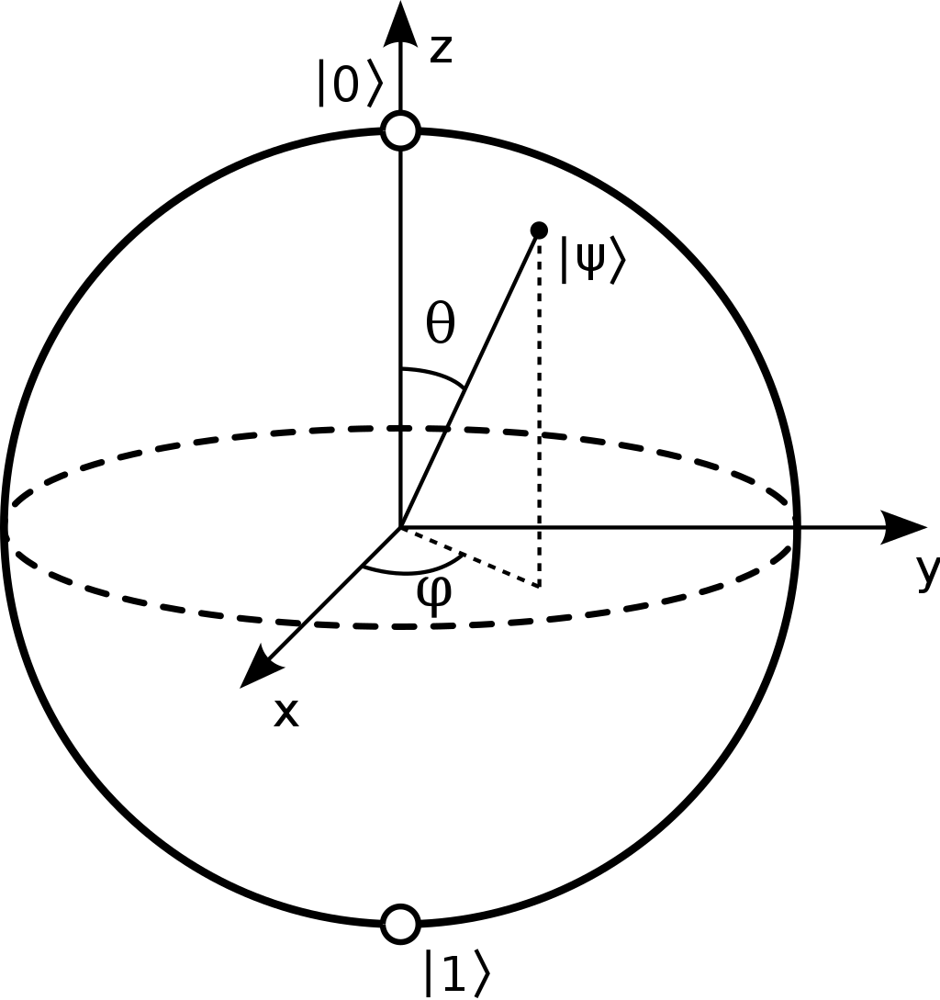
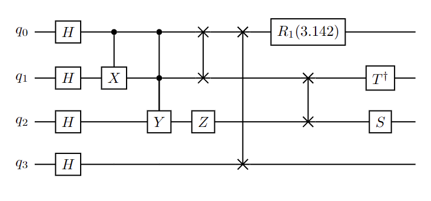

Visualization¶
Qubit Visualization¶
What are the possible states a qubit can be in and how can we build up a visual cue to help us make sense of quantum states and their evolution?
We know our qubit can have two distinct states: \(\ket{0}\) and \(\ket{1}\). If these were the only two states, we could represent them as two vectors on a one-dimensional line (i.e., the z-axis in the image below). We also know that qubits can be in an equal superposition of states: \(\ket{+}\) and \(\ket{-}\). In order to capture all of the states in equal superposition, we will need a 2D plane (i.e., the \(xy\)-plane in the image below). If you dive deeper you will learn about the existence of other states that will call for a 3D extension.
In general, a quantum state can be written in the form \(\ket{\psi} = \cos(\frac{\theta}{2})\ket{0}+e^{i\varphi}\sin(\frac{\theta}{2})\ket{1}\) where \(\theta\) is a real number between \(0\) and \(\pi\) and \(\varphi\) is a real value between \(0\) and \(2\pi\). For example, the minus state, \(\ket{-} = \frac{1}{\sqrt{2}}\ket{0}- \frac{1}{\sqrt{2}}\ket{1}\), can be rewritten as
This can be visualized in the image below as a unit vector pointing in the direction of the negative \(x\)-axis.
Using spherical coordinates, it is possible to depict all the possible states of a single qubit on a sphere. This is called a Bloch sphere.

Let us try to showcase the functionality to render such a 3D representation with CUDA-Q. First, let us define a single-qubit kernel that returns a different state each time. This kernel uses random rotations.
Note: CUDA-Q uses the QuTiP library to render Bloch spheres. The following code will throw an error if QuTiP is not installed.
[1]:
# install `qutip` in the current Python kernel. Skip this if `qutip` is already installed.
# `matplotlib` is required for all visualization tasks.
# Make sure to restart your kernel if you execute this!
# In a Jupyter notebook, go to the menu bar > Kernel > Restart Kernel.
# In VSCode, click on the Restart button in the Jupyter toolbar.
# The '\' before the '>' operator is so that the shell does not misunderstand
# the '>' qualifier for the bash pipe operation.
import sys
try:
import matplotlib.pyplot as plt
import qutip
except ImportError:
print("Tools not found, installing. Please restart your kernel after this is done.")
!{sys.executable} -m pip install qutip\>=5 matplotlib\>=3.5
print("\nNew libraries have been installed. Please restart your kernel!")
Tools not found, installing. Please restart your kernel after this is done.
Collecting qutip>=5
Downloading qutip-5.0.3.post1-cp310-cp310-manylinux_2_17_x86_64.manylinux2014_x86_64.whl (28.0 MB)
━━━━━━━━━━━━━━━━━━━━━━━━━━━━━━━━━━━━━━━━ 28.0/28.0 MB 77.1 MB/s eta 0:00:00
Requirement already satisfied: matplotlib>=3.5 in /usr/local/lib/python3.10/dist-packages (3.9.2)
Requirement already satisfied: packaging in /usr/local/lib/python3.10/dist-packages (from qutip>=5) (24.1)
Requirement already satisfied: numpy>=1.22 in /usr/local/lib/python3.10/dist-packages (from qutip>=5) (1.26.4)
Requirement already satisfied: scipy>=1.9 in /usr/local/lib/python3.10/dist-packages (from qutip>=5) (1.10.1)
Requirement already satisfied: fonttools>=4.22.0 in /usr/local/lib/python3.10/dist-packages (from matplotlib>=3.5) (4.53.1)
Requirement already satisfied: pyparsing>=2.3.1 in /usr/local/lib/python3.10/dist-packages (from matplotlib>=3.5) (3.1.2)
Requirement already satisfied: python-dateutil>=2.7 in /usr/local/lib/python3.10/dist-packages (from matplotlib>=3.5) (2.9.0.post0)
Requirement already satisfied: pillow>=8 in /usr/local/lib/python3.10/dist-packages (from matplotlib>=3.5) (10.4.0)
Requirement already satisfied: kiwisolver>=1.3.1 in /usr/local/lib/python3.10/dist-packages (from matplotlib>=3.5) (1.4.5)
Requirement already satisfied: cycler>=0.10 in /usr/local/lib/python3.10/dist-packages (from matplotlib>=3.5) (0.12.1)
Requirement already satisfied: contourpy>=1.0.1 in /usr/local/lib/python3.10/dist-packages (from matplotlib>=3.5) (1.2.1)
Requirement already satisfied: six>=1.5 in /usr/lib/python3/dist-packages (from python-dateutil>=2.7->matplotlib>=3.5) (1.16.0)
Installing collected packages: qutip
Successfully installed qutip-5.0.3.post1
WARNING: Running pip as the 'root' user can result in broken permissions and conflicting behaviour with the system package manager. It is recommended to use a virtual environment instead: https://pip.pypa.io/warnings/venv
New libraries have been installed. Please restart your kernel!
[2]:
import cudaq
import numpy as np
## Retry the subsequent cells by setting the target to density matrix simulator.
# cudaq.set_target("density-matrix-cpu")
@cudaq.kernel
def kernel(angles: np.ndarray):
qubit = cudaq.qubit()
rz(angles[0], qubit)
rx(angles[1], qubit)
rz(angles[2], qubit)
Next, we instantiate a random number generator, so we can get random outputs. We then create 4 random single-qubit states by using cudaq.add_to_bloch_sphere() on the output state obtained from the random kernel.
[3]:
rng = np.random.default_rng(seed=11)
blochSphereList = []
for _ in range(4):
angleList = rng.random(3) * 2 * np.pi
sph = cudaq.add_to_bloch_sphere(cudaq.get_state(kernel, angleList))
blochSphereList.append(sph)
We can display the spheres with cudaq.show(). Show the first sphere:
[4]:
cudaq.show(blochSphereList[0])
We can also show multiple Bloch spheres side by side - simply set the nrows and ncols in the call to cudaq.show() accordingly. Make sure to have more spaces than spheres in your list, else it will throw an error! Let us show two spheres in a row:
[5]:
cudaq.show(blochSphereList[:2], nrows=1, ncols=2)
We can show them in a column too, if we want! Simply set the nrows = 2 and ncols = 1.
[6]:
cudaq.show(blochSphereList[:2], nrows=2, ncols=1)
Can we show the entire list of 4 Bloch spheres we created? Absolutely!
[7]:
cudaq.show(blochSphereList[:], nrows=2, ncols=2)
What if we had to add multiple vectors to a single Bloch sphere? CUDA-Q uses the QuTiP toolbox to construct Bloch spheres. We can then add multiple states to the same Bloch sphere by passing the sphere object as an argument to cudaq.add_to_bloch_sphere().
[8]:
import qutip
rng = np.random.default_rng(seed=47)
blochSphere = qutip.Bloch()
for _ in range(10):
angleList = rng.random(3) * 2 * np.pi
sph = cudaq.add_to_bloch_sphere(cudaq.get_state(kernel, angleList), blochSphere)
This created a single Bloch sphere with 10 random vectors. Let us see how it looks.
[9]:
blochSphere.show()
Unfortunately, there is no such handy visualization for multi-qubit states. In particular, a multi-qubit state cannot be visualized as multiple Bloch spheres due to the nature of entanglement that makes quantum computing so powerful.
Kernel Visualization¶
A CUDA-Q kernel can be visualized using the cudaq.draw API which returns a string representing the drawing of the execution path, in the specified format. ASCII (default) and LaTeX formats are supported.
[10]:
@cudaq.kernel
def kernel_to_draw():
q = cudaq.qvector(4)
h(q)
x.ctrl(q[0], q[1])
y.ctrl([q[0], q[1]], q[2])
z(q[2])
swap(q[0], q[1])
swap(q[0], q[3])
swap(q[1], q[2])
r1(3.14159, q[0])
tdg(q[1])
s(q[2])
[11]:
print(cudaq.draw(kernel_to_draw))
╭───╮ ╭───────────╮
q0 : ┤ h ├──●────●────╳───╳─┤ r1(3.142) ├───────
├───┤╭─┴─╮ │ │ │ ╰───────────╯╭─────╮
q1 : ┤ h ├┤ x ├──●────╳───┼───────╳──────┤ tdg ├
├───┤╰───╯╭─┴─╮╭───╮ │ │ ╰┬───┬╯
q2 : ┤ h ├─────┤ y ├┤ z ├─┼───────╳───────┤ s ├─
├───┤ ╰───╯╰───╯ │ ╰───╯
q3 : ┤ h ├────────────────╳─────────────────────
╰───╯
[12]:
print(cudaq.draw('latex', kernel_to_draw))
\documentclass{minimal}
\usepackage{quantikz}
\begin{document}
\begin{quantikz}
\lstick{$q_0$} & \gate{H} & \ctrl{1} & \ctrl{2} & \swap{1} & \swap{3} & \gate{R_1(3.142)} & \qw & \qw \\
\lstick{$q_1$} & \gate{H} & \gate{X} & \ctrl{1} & \targX{} & \qw & \swap{1} & \gate{T^\dag} & \qw \\
\lstick{$q_2$} & \gate{H} & \qw & \gate{Y} & \gate{Z} & \qw & \targX{} & \gate{S} & \qw \\
\lstick{$q_3$} & \gate{H} & \qw & \qw & \qw & \targX{} & \qw & \qw & \qw \\
\end{quantikz}
\end{document}
Copy this output string into any LaTeX editor and export it to PDF.
